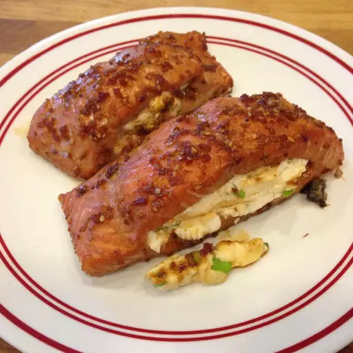

Cream Cheese Stuffed Salmon

Description
A simple soy sauce-based marinade will leave you with tender and tasty baked salmon!
Stuff fillets or salmon steaks with a quick cream cheese mixture and top with a teriyaki glaze. Then sit back and enjoy the raves!
Ingredients
- 1 cup soy sauce
- 3 Tbsp honey
- 2 Tbsp Dijon mustard
- 1 tsp ground ginger
- 4 cloves garlic, minced
- 1/2 tsp red pepper flakes, or to taste
- 32 oz (2 lbs) salmon
- 3/4 cup cream cheese, softened
- 3 green onions, finely chopped
- 1/2 tsp Dijon mustard
- 1/2 cup teriyaki sauce
- 1 Tbsp sesame seeds
Steps
- Make the marinade by stirring together the 1 cup soy sauce, 3 Tbsp honey, 2 Tbsp mustard, 1 tsp ground ginger, 4 cloves minced garlic, and 1/2 tsp red pepper flakes.
- Arrange the salmon in a shallow pan. Pour the marinade over the salmon. Cover and refrigerate until ready to cook the salmon.
- Make the cream cheese stuffing by combining 3/4 cup softened cream cheese, 3 chopped green onions, and 1/2 tsp Dijon mustard in a small bowl. Refrigerate until ready to cook the salmon.
- Preheat oven to 400 degrees F. Prepare greased baking dish.
- Remove salmon from marinade. Cut a slit in the thickest part of each fillet to make a pocket. Spoon cream cheese stuffing into the pocket. Place salmon in prepared baking dish.
- Cook salmon in oven for 10-15 minutes.
- Remove salmon from oven. Reduce heat to 300 degrees F.
- Spoon teriyaki sauce over salmon and sprinkle with sesame seeds.
- Return salmon to oven and cook until fish is easily flaked with a fork, about 5 more minutes.
- Ready to serve!